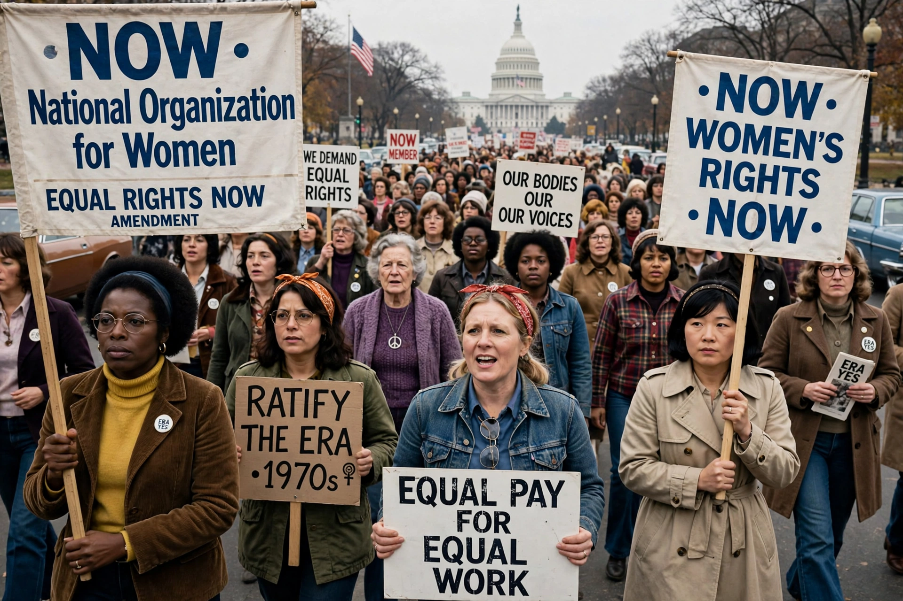

Founded: 30 June 1966, Washington, D.C.
Founders: Betty Friedan, Pauli Murray and others
Type: Nonprofit advocacy organization
Focus: Feminism, women's rights, equal rights
The National Organization for Women (NOW) is an American feminist organization founded in 1966. It is legally a 501(c)(4) social welfare organization and one of the largest feminist activist organizations in the United States, with hundreds of local chapters.
NOW was founded by 28 women, including Betty Friedan, author of The Feminine Mystique, at the Third National Conference of Commissions on the Status of Women, frustrated at the federal government's failure to enforce anti-discrimination law. Friedan wrote "NOW" on a napkin as the organization's name; its mission was to bring women into full participation in mainstream American society.
NOW's signature causes have included ratification of the Equal Rights Amendment, women's suffrage commemoration, abortion rights and reproductive freedom, workplace equality, an end to violence against women, racial justice, and LGBTQ rights. Its Women's Strike for Equality on 26 August 1970 drew tens of thousands nationwide.